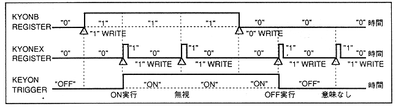

Table 4.10 KYONB function
| Bit | Function |
| 0 | Register KEY_OFF |
| 1 | Register KEY_ON |
"KYONEX" and "KYONB" exist in each slot. The sequence of KEY_ON and KEY_OFF is as shown in Figure 4.8.
"KYONEX" does not need to write "0B" after writing "1B". In any slot, "1B" will work for all slots, so there is no need to set it to "1B" in a specific slot.
Figure 4.8 KEY_ON and KEY_OFF functions
